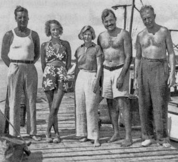
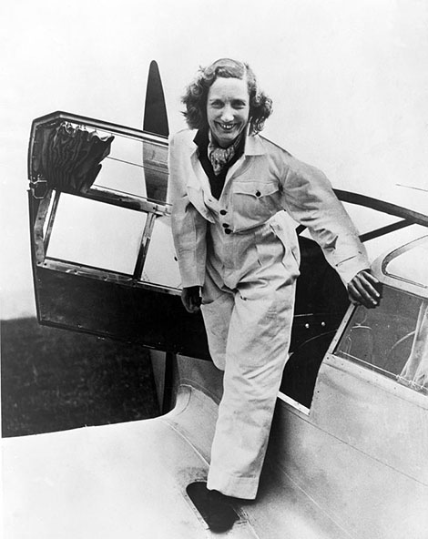
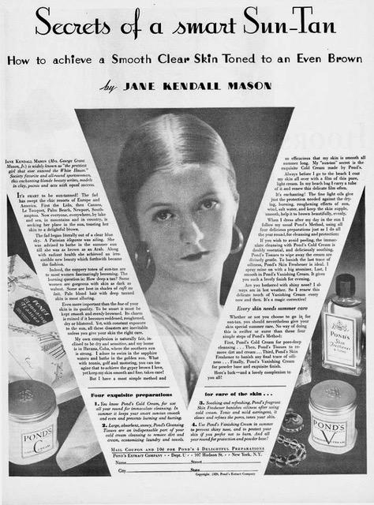
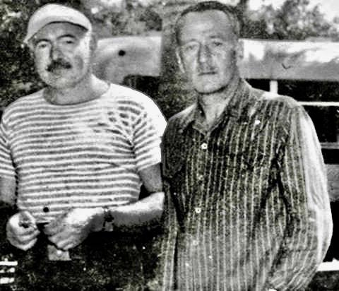
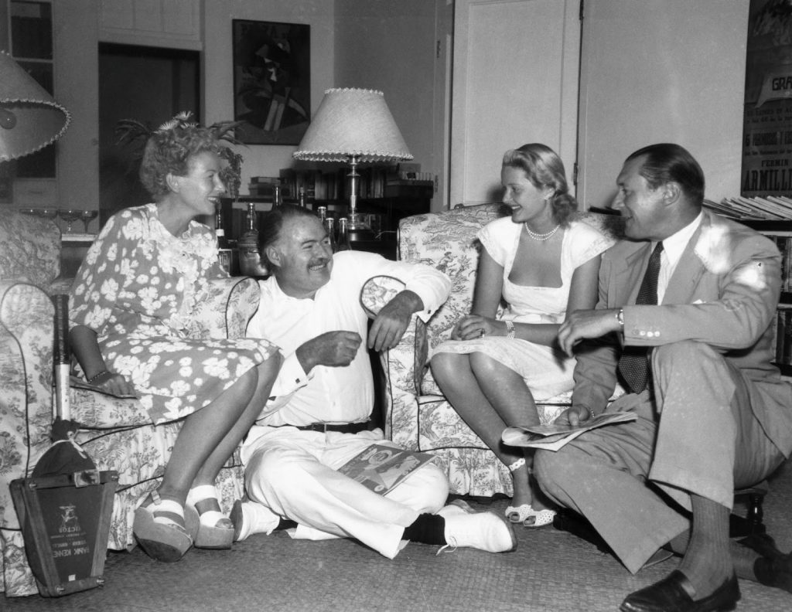
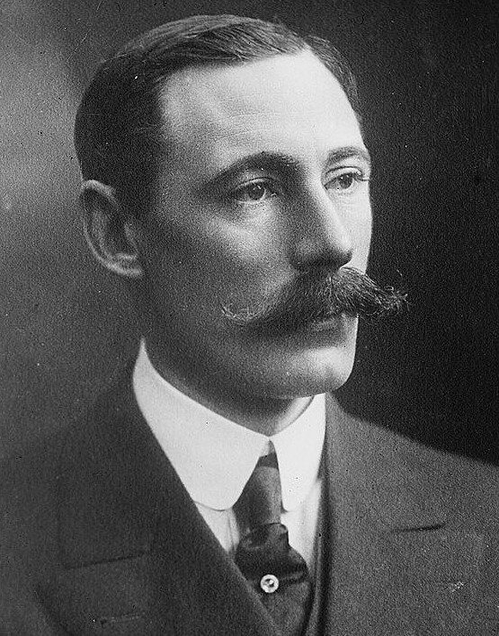
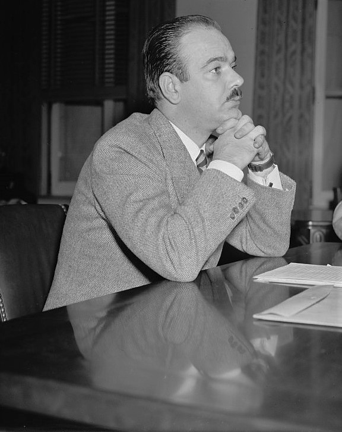
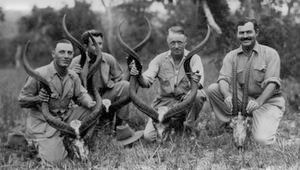

Back in Key West with Hemingway’s boat, Pilar.
By Lucia Adams
Editors’ Note: We are honored to publish an excerpt from Wahoga: Bror Blixen in Africa, a new book by Classic Chicago contributor Lucia Adams.
In the summer of 1933 Bror hired Beryl for a reccie, when after three weeks he failed to find an elephant for Colonel Sir Leonard Ropner, 1st Baronet, Conservative MP for Barkston Ash, Yorkshire, winner of the Military Cross in 1919, and owner of a merchant shipping company. On the last day of the safari Beryl spotted four good bulls in Tsavo, scrawled their location on a pad, stuffed it into a weighted leather pouch with yellow and blue ribbbons, the Markham racing colors, and dropped it to Bror below. The next day she flew towards the signalling fire in Bror’s camp, and five hours later Ropner got his trophy. He published an article about it in the London Evening Standard in September,
“At Nairobi Baron von Blixen, a Swedish sportsman, joined us. The party consisted of ten Africans, three of whom were expert trackers…they had previously been poachers and one was a murderer! …One of the most amazing sights is hunting by car, but it is not very sporting. I should not indulge in it. I was trying to get an elephant for three weeks but only on the last day of my stay in the bush did I succeed”.
Like most safari memoirists he suggests his hunting skills were all- important though Bror drove the elephant to his loaded rifle making it easier to kill. 
Beryl Markham.
In November 1933 Ernest Hemingway shipped out for his first safari with wife Pauline, whose uncle Gus Pfeiffer financed the costly extravaganza with a cavalcade of trucks and 20 pieces of luggage, and his friend Charles Thompson from a prominent Key West family, one of the Hemingway Mob fishing the Gulf Stream, hunting elk and bear in Wyoming, and the only one who would dare venture forth with him. Hemingway did his homework, watching rehearsals of the famous lion tamer Clyde Beatty and having a high powered custom rifle with a telescope specially made.

Ernest and Pauline Pfeiffer Hemingway.
By the Thirties countless tourists, opera singers, prize fighters, writers, and businessmen dressed like white hunters were invading East Africa for safaris. Hemingway was another decked out American tourist on a luxurious safari that included killing as much game as possible, lots of packaged bonhomie and camaraderie, ngomas (which Pauline paid extra for), copious praise, the works! Philip Percival was hired as their first white hunter, recommended by Hemingway’s girlfriend Jane Mason, a Pond’s model and wife of Grant Mason director of Pan Am in Havana, the epicenter of cosmopolitan sophistication for rich expats.

Jane Mason.
Jane Mason met Hemingway two years earlier on the Ile de France and at her Cuban finca became his lover. She introduced him to Dick Cooper in New York, “Those fine guys Dick Cooper so damned kindly cabled to (Tanganyika Guides) wanted more than I could pay, …. (he was) damned nice to wire them and I want to pay him for the wire. It is fine for him to do you a favor but not to have to take on all your gory friends,” Concerned that he avoid those “no-good white hunters” in Africa, Cooper pulled strings to get Tanganyika Guides to lower their rates and Percival became the immortal Pop in Green Hills of Africa.

Hemingway and Dick Cooper.
Since Percival was on safari until December 20 the Hemingway party waited for a week at his ostrich farm at Potha Hill in Machakos, hilly country southeast of Nairobi, where his competent wife Vivian arranged shooting excursions on the Kapiti plains. When Percival returned they all motored to Arusha and the Serengeti where Hemingway bagged two lions, a kudu and his first rhino. At Pothos he met Alfred Vanderbilt who had come over with Winston Guest now en route home after bagging two elephants. Young Vanderbilt, also a friend of the Coopers and the Masons was waiting to go on safari with Bror in January before heading home. His future obituary noted he “shot lions with Hemingway in Africa.”

Hemingway was Winston Guest’s best man at his 1947 wedding to C.Z. Cochrane. The two couples celebrated quietly at the Hemingways’ house in Havana following the ceremony.
When Hemingway came down with amoebic dysentery he was flown to a Nairobi hospital and while recuperating at the New Stanley Vanderbilt introduced him to Bror who introduced him to Beryl. She was obviously not impressed and he called her a first class bitch though in 1942 when West with the Night was published to much acclaim he said she could write rings around him. In Moveable Feast he wrote that he knew Bror for a long time before he met Beryl, when in fact they met at exactly the same time.
On January 14 1934 back on safari Hemingway stayed at Cooper’s and hunted kudu constantly competing with Thompson for the largest trophy. He killed four Thompson gazelles, eight Grant gazelles, seven wildebeests, seven impala, two Klipspringers, four roan, two bushbacks, two reed bucks, two oryx, four topis, two waterbucks, one eland, three kudus, three cheetahs, four buffaloes, two leopards, two rhinos, a serval cat, two warthogs, 13 zebras, one cobra, 41 hyenas and 84 lions, and personally dispatched numbers 23,27,64,79 plus a lioness whose neck he proudly broke.
In early February Bror hired Beryl for two weeks to scout elephants around Kilamakoy and Voi for the two-week safari of Vanderbilt. His family, a couple of generations before from the wrong side of the tracks, made a Gilded Age fortune in shipping and railroads and his father Alfred Gwynne Vanderbilt, third son of Cornelius Vanderbilt II, died on the Lusitania. His mother Margaret Emerson, daughter of the Bromo-Seltzer inventor Isaac Emerson, would the next year give him Sagamore Farm, starting his career in thoroughbred racing at Belmont and Pimlico, with Native Dancer and Sea Biscuit in the stables.
Alfred Gwynne Vanderbilt Jr.
Beryl flew reccies every day, and Bror wrote they wore out many boots, smashed up an aeroplane and three cars but only sighted one big tusker which “defied us for two and a half months” never even seeing the tip of an elephant’s tail. The safari actually lasted just two and a half weeks and the smashing of a plane doesn’t gel with Beryl’s log book which revealed no break in operation and no record of any crashes throughout the two weeks. She was scrupulous about logging everything that took place with her airplanes — which some said was the only thing she ever wrote herself.
While looking for guinea fowl for dinner one night they were, inevitably, charged by two rhinos, Vanderbilt disappearing into the brushwood exactly where they were headed. Bror seized the gunbearer’s rifle and blasted away, and one fell stone dead two yards from Vanderbilt’s heels while the other vanished — but the client got his horn and hide. Bror said he expected dismissal every day and Vanderbilt said he would come back the next year for three months to get his elephant since “this was the most fun he ever had.” Fun is a frequent word appearing in safari recollections and memoirs.
On February 18 as planned Bror, Percival, Cooper and Vanderbilt, who paid for the trip, met Hemingway for a week’s fishing off Malindi on the northern Kenya coast, in a true meeting of the international set, an heir to America’s greatest fortune, the world’s most famous writer, two legendary white hunters, one a baron. Bror admitted he was an amateur fisherman but wished to explore the sport of deep sea fishing and commercial development off the coast of Kenya.
They stayed at the posh Palm Beach Hotel in Malindi and chartered the Xanadu, a hulk in disrepair constantly breaking down, nailing a plank to the roof of the cabin in the stern, cutting off the legs of two chairs and fitting them with rod sockets. Vanderbilt and Percival occupied these while Bror and Cooper maneuvered on the narrow deck. Fishing for kingfish, amberjacks, groupers, dolphin and sailfish, Bror slyly commented, “The author Ernest Hemingway, perhaps one of the best-known fishermen in America, tried a week’s fishing and thought he had proof of the presence of tunny, swordfish, and marlin.” Afterwards they all set off for France on the Gripsholm spending the days lounging around the saltwater pool, passing through the Sea of Galilee and on to Villefranche where they disembarked on March 8th and took the train to Paris. One can only imagine…

Freddie Guest.
Near Tanganyika elephant tracks revealed four bulls were close by so they cut their way through the bush until Simba saw them at foot of the Pares. Bror, Diana, Simba and Gondo ascended the cliffs to get a better view while Freddie Guest and Percival remained behind to cut off the elephants with cars if they tried to escape. On the cliffs they came to a flat landing and right in front of them were 25 bulls within one hundred yards. Bror pointed out one large tusker and shouted “Fire Diana” and it fell, its four legs collapsing under it while its heavy body rested against a palm tree.
The other bulls ran but Bror said this one was the best one he had ever seen and with sweeping hyperbole wrote that Diana had shot the biggest elephant “any woman had ever done”. They pulled out the luncheon basket and cold beer and when they reached the bull it took three hours for the boys working on each side to extract the tusks, carve up the carcass, cut off the trunk which took four men to carry to the car. Bror was enamored of Diana who wagered ten shillings to guess the weight of the tusks, which turned out to be 125 and 126.
Makula reported seeing three bulls and Diana and the gun bearers walked through dangerous bayonet grass and she fired, aiming high on the shoulder of one bull which with a heavy sigh sank to the ground with a broken back its hind legs folding under it. Its tail was cut off and after two hours they reached the car with the 130 pound tusks, Bror wrote he struggled to find big tuskers ”then along comes an English miss and in two days bags these giants.”
Diana caught the train back to Nairobi, the three men staying on, rushing home to tell her friends about the fun and excitement of these two days. Then her father bagged a big bull for “the most successful three day hunt ever to have occurred “with four pairs of gigantic tusks. All this was celebrated with the usual pink gin, the Guests having found bigger tuskers than anything Bror ever had so he said and setting a record for killing four of the biggest tuskers ever shot, an achievement said to be unsurpassed until the Fifties.

Arnold Gingrich.
Back in America Hemingway started writing about his content-rich trip for Esquire, founded the year before by Arnold Gingrich, to become Jane Mason’s fourth husband, and cementing Bror’s reputation as a larger-than-life sportsman. Hemingway elaborately praised him and Percival, greatly exaggerating the danger hunting clients like himself experienced, “ they do not get mauled and their clients get record heads, record tusks, and super lions year after year”; in the June 1934 “Second Letter from Tanganyika” he distinguished between true sport on foot, and shooting from a car or boma.
The next month in the “Third Tanganyika letter” Hemingway got in on the mythmaking writing that Bror was a great shot “who can shoot partridges flying with a .450 No. 2 Express rifle “ or stop a charging rhino at ten yards, remarking, ”I could not let him come forever, what?” With a humorous attempt at macho sychophancy, he wrote “Bror von Blixen, if there every were any justice for elephants, would have been trampled to death at least twice.” Hemingway’s hatred of hyenas, little carrion pack dogs that clean up carcasses, revealed a sadistic streak usually reserved for sharks. Bror mischievously contradicted him writing of their devotion to family, their playfulness and charm.

Ben Fourie, Charles Thompson, Philip Percival and Hemingway.
In Green Hills still euphoric from the safari Hemingway transmogrified Percival into Pop, a scatalogical killer, urging clients to “shoot the bastard” ,”I’ll bust the son of a bitch”, “shoot the damn rhino” who taught him to kill cleanly not inflicting more pain than necessary by placing precise bullets, another absurd myth and justification for hunting. Percival, usually broke, flattered his fee-paying clients, praising Hemingway for killing record oryx and eland but in private called him “a bullshit merchant of the first class”. He would take Hemingway on safari again in 1954. Karen hated Green Hills with its violence borne of insecurity and said it reminded her of Bror.